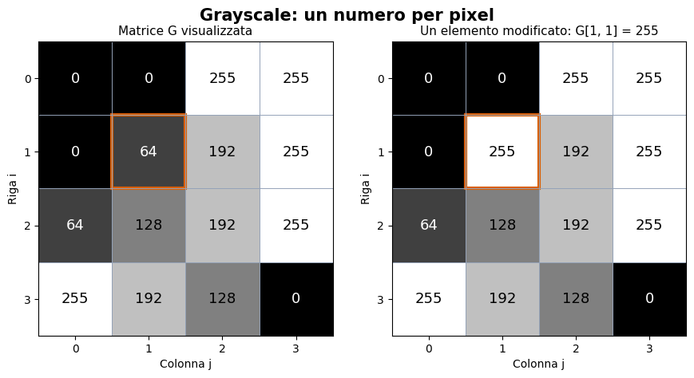
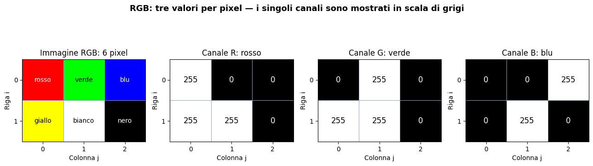
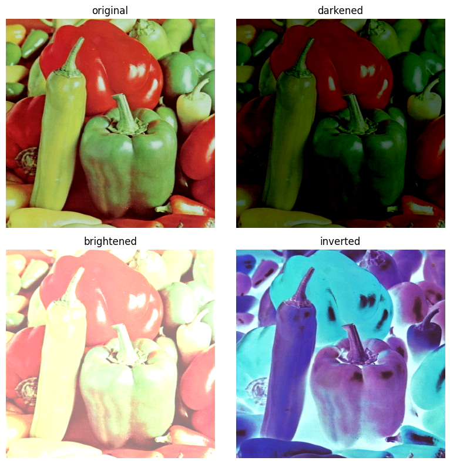
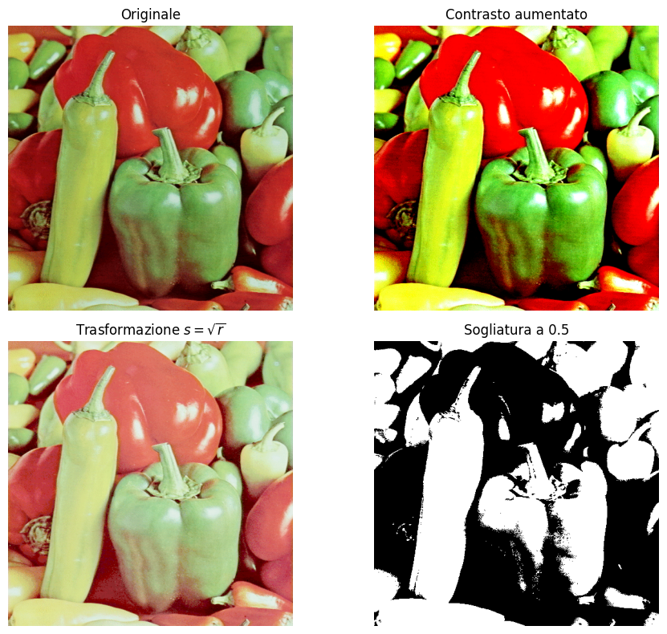
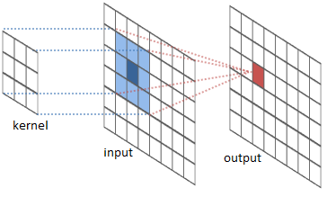
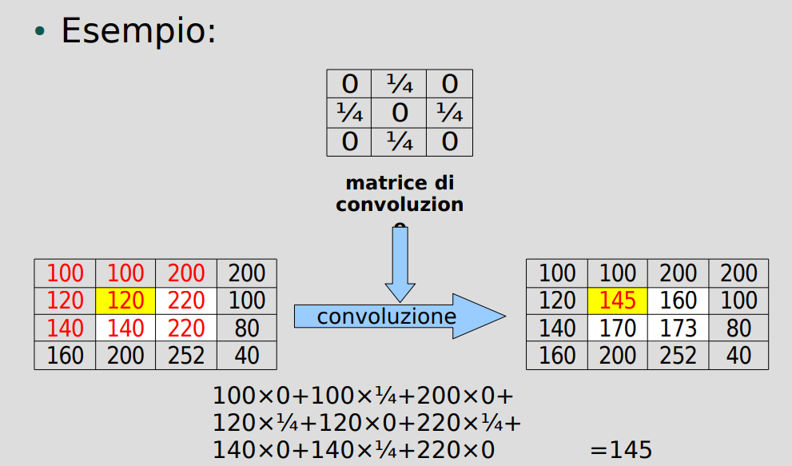
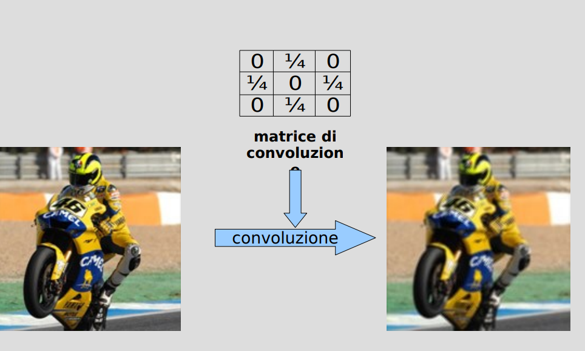
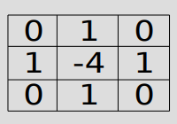
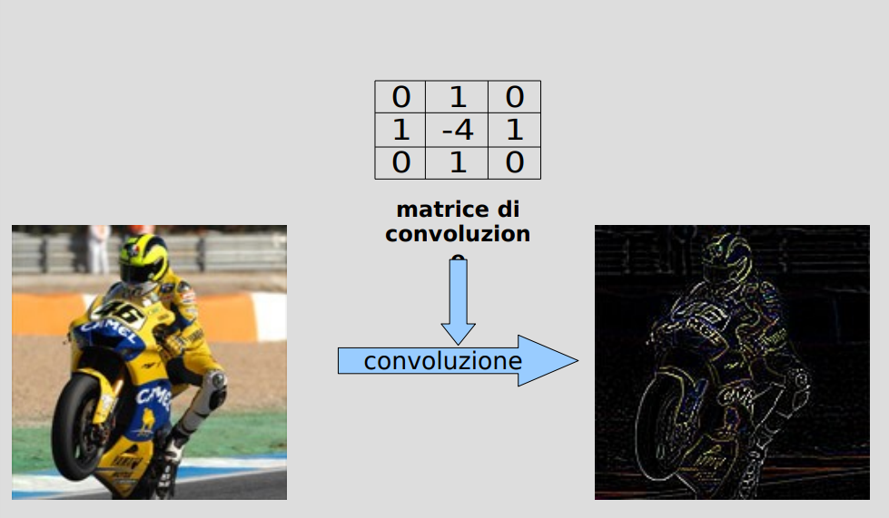
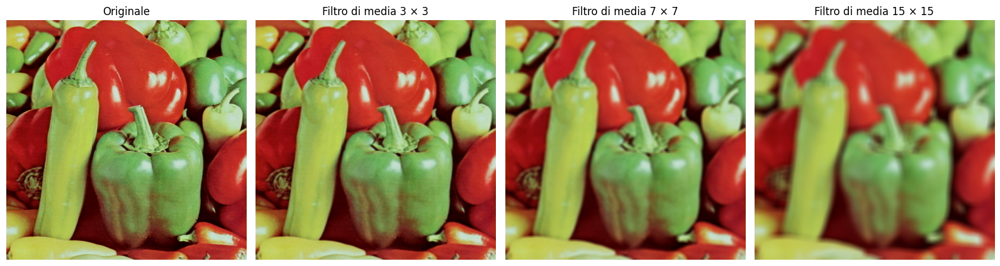

Dati come immagini#
Un’immagine è una griglia di numeri#
Un’immagine digitale è una griglia rettangolare di piccoli elementi chiamati pixel (picture elements). Per ogni pixel memorizziamo uno o più numeri che ne descrivono l’intensità o il colore.
Indichiamo con \(M\) il numero di righe (altezza) e con \(N\) il numero di colonne (larghezza): l’immagine contiene \(MN\) pixel. In NumPy si accede al pixel con immagine[i, j], indicando prima la riga e poi la colonna. Gli indici partono da zero; nelle visualizzazioni seguenti il pixel [0, 0] è in alto a sinistra.
La differenza fondamentale è nel numero di valori associati a ciascun pixel:
un’immagine grayscale, o in scala di grigi, ha un valore per pixel;
un’immagine a colori RGB ha tre valori per pixel: rosso, verde e blu.
1. Immagini grayscale: una matrice#
Un’immagine in scala di grigi si rappresenta con una matrice \(G\in\mathbb{R}^{M\times N}\). Nel formato comune a 8 bit, ciascun valore è un intero compreso tra \(0\) e \(255\):
\(0\) corrisponde al nero;
\(255\) corrisponde al bianco;
i valori intermedi corrispondono a grigi progressivamente più chiari.
Gli 8 bit permettono di rappresentare \(2^8=256\) livelli. In NumPy il tipo corrispondente è uint8, cioè intero senza segno a 8 bit. Non tutte le immagini usano questo formato: esistono anche rappresentazioni a 16 bit o in virgola mobile.
Consideriamo questa piccola immagine di \(4\times4=16\) pixel:
Ogni elemento della matrice determina il grigio di una casella. Cambiare un elemento significa cambiare il pixel corrispondente. Nell’esempio modifichiamo G[1, 1], cioè il pixel della seconda riga e della seconda colonna, da \(64\) a \(255\).
import numpy as np
import matplotlib.pyplot as plt
from matplotlib.patches import Rectangle
G = np.array([
[0, 0, 255, 255],
[0, 64, 192, 255],
[64, 128, 192, 255],
[255, 192, 128, 0]
], dtype=np.uint8)
G_modificata = G.copy() # Mantieni anche la matrice originale
G_modificata[1, 1] = 255
print("Forma (righe, colonne):", G.shape)
print("Tipo:", G.dtype, "— memoria dei pixel:", G.nbytes, "byte")
print("Pixel G[1, 1]:", G[1, 1], "→", G_modificata[1, 1])
fig, assi = plt.subplots(1, 2, figsize=(9, 4.6))
for ax, A, titolo in zip(assi, [G, G_modificata],
["Matrice G visualizzata", "Un elemento modificato: G[1, 1] = 255"]):
# La scala è fissata per confrontare correttamente le intensità
ax.imshow(A, cmap="gray", vmin=0, vmax=255, interpolation="nearest")
for i in range(4):
for j in range(4):
ax.text(j, i, str(A[i, j]), ha="center", va="center",
color="white" if A[i, j] < 128 else "black", fontsize=13)
ax.add_patch(Rectangle((0.5, 0.5), 1, 1, fill=False,
edgecolor="#D95F02", linewidth=3))
ax.set_xticks(range(4))
ax.set_yticks(range(4))
ax.set_xticks(np.arange(-0.5, 4, 1), minor=True)
ax.set_yticks(np.arange(-0.5, 4, 1), minor=True)
ax.grid(which="minor", color="#94A3B8", linewidth=0.7)
ax.tick_params(which="minor", bottom=False, left=False)
ax.set_xlabel("Colonna j")
ax.set_ylabel("Riga i")
ax.set_title(titolo, fontsize=11)
fig.suptitle("Grayscale: un numero per pixel", fontsize=15, fontweight="bold")
plt.tight_layout()
plt.show()
Forma (righe, colonne): (4, 4)
Tipo: uint8 — memoria dei pixel: 16 byte
Pixel G[1, 1]: 64 → 255

I numeri scritti nei quadrati sono annotazioni aggiunte per leggere la figura: non fanno parte dell’immagine. L’immagine contiene soltanto i 16 valori della matrice.
Il parametro cmap="gray" visualizza i numeri come livelli di grigio. Senza questa scelta, Matplotlib può associare ai numeri falsi colori. Impostando vmin=0, vmax=255, il valore \(0\) rimane nero e \(255\) rimane bianco in entrambi i pannelli.
2. Immagini RGB: tre matrici, un colore per pixel#
Per descrivere il colore usiamo tre componenti: R (Red, rosso), G (Green, verde) e B (Blue, blu). Nel formato RGB a 8 bit per canale, ogni componente varia da \(0\) a \(255\).
Terna \((R,G,B)\) |
Colore |
|---|---|
\((0,0,0)\) |
Nero |
\((255,255,255)\) |
Bianco |
\((255,0,0)\) |
Rosso |
\((0,255,0)\) |
Verde |
\((0,0,255)\) |
Blu |
\((255,255,0)\) |
Giallo |
\((128,128,128)\) |
Grigio intermedio |
Un’immagine RGB di \(M\times N\) pixel è quindi memorizzata, nella rappresentazione NumPy usata qui, come un array di forma \((M,N,3)\). La terza dimensione identifica il canale: 0 per R, 1 per G, 2 per B.
Creiamo un’immagine di 2 righe e 3 colonne, quindi appena 6 pixel: rosso, verde e blu nella prima riga; giallo, bianco e nero nella seconda. I suoi tre canali sono
Per esempio, il pixel giallo ha coordinate [1, 0]: nello stesso punto troviamo \(R=255\), \(G=255\) e \(B=0\). Le tre componenti insieme determinano il colore visualizzato.
RGB = np.array([
[[255, 0, 0], [0, 255, 0], [0, 0, 255]],
[[255, 255, 0], [255, 255, 255], [0, 0, 0]]
], dtype=np.uint8)
print("Forma (righe, colonne, canali):", RGB.shape)
print("Numero di pixel:", RGB.shape[0] * RGB.shape[1])
print("Numero di valori memorizzati:", RGB.size)
print("Memoria dei pixel:", RGB.nbytes, "byte")
print("Terna del pixel giallo RGB[1, 0]:", RGB[1, 0])
print("Componente rossa RGB[1, 0, 0]:", RGB[1, 0, 0])
fig, assi = plt.subplots(1, 4, figsize=(13, 4))
assi[0].imshow(RGB, interpolation="nearest")
assi[0].set_title("Immagine RGB: 6 pixel")
nomi = [["rosso", "verde", "blu"], ["giallo", "bianco", "nero"]]
for i in range(2):
for j in range(3):
colore = "white" if (i, j) in [(0, 0), (0, 2), (1, 2)] else "black"
assi[0].text(j, i, nomi[i][j], ha="center", va="center",
color=colore, fontsize=10)
for c, nome in enumerate(["R: rosso", "G: verde", "B: blu"]):
canale = RGB[:, :, c] # Tutte le righe e le colonne, un solo canale
ax = assi[c + 1]
ax.imshow(canale, cmap="gray", vmin=0, vmax=255, interpolation="nearest")
ax.set_title(f"Canale {nome}")
for i in range(2):
for j in range(3):
ax.text(j, i, str(canale[i, j]), ha="center", va="center",
color="white" if canale[i, j] < 128 else "black", fontsize=12)
for ax in assi:
ax.set_xticks(range(3))
ax.set_yticks(range(2))
ax.set_xlabel("Colonna j")
ax.set_ylabel("Riga i")
ax.set_xticks(np.arange(-0.5, 3, 1), minor=True)
ax.set_yticks(np.arange(-0.5, 2, 1), minor=True)
ax.grid(which="minor", color="#94A3B8", linewidth=0.7)
ax.tick_params(which="minor", bottom=False, left=False)
fig.suptitle("RGB: tre valori per pixel — i singoli canali sono mostrati in scala di grigi",
fontsize=13, fontweight="bold")
plt.tight_layout()
plt.show()
Forma (righe, colonne, canali): (2, 3, 3)
Numero di pixel: 6
Numero di valori memorizzati: 18
Memoria dei pixel: 18 byte
Terna del pixel giallo RGB[1, 0]: [255 255 0]
Componente rossa RGB[1, 0, 0]: 255

Come leggere i canali: nei tre pannelli in scala di grigi, una casella bianca indica che quel canale vale \(255\); una casella nera indica che vale \(0\). Il bianco nel pannello R significa quindi “componente rossa massima”, non “pixel RGB bianco”. Il colore finale dipende da tutti e tre i valori.
Per accedere ai dati:
Espressione |
Significato |
Forma del risultato nell’esempio |
|---|---|---|
|
Tutta la terna del pixel giallo |
|
|
Componente rossa di quel pixel |
Scalare |
|
Matrice del canale rosso |
|
|
Prima riga di pixel, tutti i canali |
|
Per trasformare il pixel giallo in magenta basta assegnare RGB[1, 0] = [255, 0, 255]: si modifica una terna di numeri.
3. Quanta memoria serve?#
Un byte contiene 8 bit. Con il tipo uint8, ogni valore occupa un byte: un pixel grayscale richiede un byte, un pixel RGB ne richiede tre.
Rappresentazione |
Forma dell’array |
Valori per pixel |
Memoria dei dati |
|---|---|---|---|
Grayscale |
\((M,N)\) |
1 |
\(MN\) byte |
RGB |
\((M,N,3)\) |
3 |
\(3MN\) byte |
Nell’esempio grayscale memorizziamo \(4\cdot4=16\) valori, quindi 16 byte. Nell’esempio RGB i pixel sono \(2\cdot3=6\), ma i valori sono \(2\cdot3\cdot3=18\), quindi 18 byte. Non bisogna confondere il numero di pixel con il numero di valori memorizzati.
Per un’immagine di \(1000\times1000\) pixel servono 1 MB in grayscale oppure 3 MB in RGB, usando \(1\text{ MB}=10^6\) byte. Questi conti riguardano i dati dell’array non compressi, senza i metadati: la dimensione di un file PNG o JPEG può essere diversa perché dipende anche dal formato e dalla compressione.
4. Dai valori interi ai calcoli sull’immagine#
Per eseguire operazioni numeriche è spesso utile convertire i dati in virgola mobile e, nel caso a 8 bit, normalizzarli nell’intervallo \([0,1]\):
Il nero diventa \(0\), il bianco diventa \(1\). Cambiano tipo e scala numerica, mentre la griglia dei pixel rimane la stessa. Un valore float32 occupa 4 byte, quindi l’array richiede quattro volte la memoria dell’equivalente uint8.
Prima di somme e sottrazioni, convertiamo gli interi in float: l’aritmetica direttamente su uint8 può produrre overflow o underflow, perché i risultati non sono rappresentabili oltre l’intervallo \([0,255]\).
G_float = G.astype(np.float32) / 255.0
RGB_float = RGB.astype(np.float32) / 255.0
print("Grayscale normalizzata:")
print(np.round(G_float, 3))
print("Forma:", G_float.shape, "— tipo:", G_float.dtype)
print("Memoria:", G_float.nbytes, "byte, contro", G.nbytes, "byte in uint8")
print("Giallo normalizzato:", RGB_float[1, 0])
Grayscale normalizzata:
[[0. 0. 1. 1. ]
[0. 0.251 0.753 1. ]
[0.251 0.502 0.753 1. ]
[1. 0.753 0.502 0. ]]
Forma: (4, 4) — tipo: float32
Memoria: 64 byte, contro 16 byte in uint8
Giallo normalizzato: [1. 1. 0.]
Dalle piccole matrici a una fotografia#
Una fotografia usa la stessa rappresentazione dei nostri esempi, ma con molte più righe e colonne. Nel seguito leggiamo peppers1.tif, normalizziamo i valori e modifichiamo le intensità dei pixel; passeremo poi alla convoluzione, che combina i valori di pixel vicini.
import numpy as np
import matplotlib.pyplot as plt
# Leggi l'immagine: i canali sono già in ordine RGB
img = plt.imread("immagini_sorgente/peppers1.tif")
print(f"Minimo assoluto: {np.min(img)}")
print(f"Massimo assoluto: {np.max(img)}")
# Converti in float e normalizza se l'immagine ha valori interi
if np.issubdtype(img.dtype, np.integer):
img2 = img.astype(np.float32) / np.iinfo(img.dtype).max
else:
img2 = img.astype(np.float32) # Si assumono valori già in [0, 1]
plt.figure(figsize=(8, 8))
plt.subplot(221)
plt.imshow(img2)
plt.title("original")
plt.axis("off")
plt.subplot(222)
img_d = np.clip(img2 - 0.5, 0, 1)
plt.imshow(img_d)
plt.title("darkened")
plt.axis("off")
plt.subplot(223)
img_b = np.clip(img2 + 0.5, 0, 1)
plt.imshow(img_b)
plt.title("brightened")
plt.axis("off")
plt.subplot(224)
plt.imshow(1 - img2)
plt.title("inverted")
plt.axis("off")
plt.tight_layout()
plt.show()
Minimo assoluto: 0
Massimo assoluto: 229

# Aumento del contrasto rispetto al livello intermedio 0.5
img_contrasto = np.clip(0.5 + 2 * (img2 - 0.5), 0, 1)
# Trasformazione non lineare: schiarisce soprattutto i valori bassi
img_gamma = img2**0.5
# Conversione da RGB a scala di grigi
img_grigia = (
0.2126 * img2[:, :, 0]
+ 0.7152 * img2[:, :, 1]
+ 0.0722 * img2[:, :, 2]
)
# Sogliatura: ogni pixel diventa bianco oppure nero
img_binaria = (img_grigia >= 0.5).astype(float)
fig, axes = plt.subplots(2, 2, figsize=(10, 8))
immagini = [img2, img_contrasto, img_gamma, img_binaria]
titoli = [
"Originale",
"Contrasto aumentato",
r"Trasformazione $s=\sqrt{r}$",
"Sogliatura a 0.5"
]
for ax, immagine, titolo in zip(axes.ravel(), immagini, titoli):
ax.imshow(immagine, cmap="gray", vmin=0, vmax=1)
ax.set_title(titolo)
ax.axis("off")
plt.tight_layout()
plt.show()

Queste trasformazioni calcolano ogni pixel di uscita usando soltanto il pixel corrispondente; la convoluzione combina invece i valori di un intorno.
Convoluzione#
In generale, la convoluzione è un’operazione matematica (simbolo: *) che, date due funzioni, ne produce una terza che è calcolata come segue:
Nell’imaging, \(f\) e \(g\) sono funzioni discrete bidimensionali, cioè matrici,corrispondenti ad immagini. La convoluzione discreta 2D diventa quindi:
L’applicazione delle convoluzioni in imaging può essere più facilmente spiegata graficamente come segue:
consideriamo una matrice \(K\) di dimensione nxn (di solito n è dispari) il cui punto centrale viene fatto coincidere con un pixel dell’immagine \(f\) a cui applicare la convoluzione
moltiplichiamo i valori nella matrice con i valori dei pixel corrispondenti, e sommiamo tutti i risultati
ll valore ottenuto è il valore del pixel centrale nel risultato
l’operazione viene ripetuta (spostando la matrice) per tutti i pixel dell’immagine
All’interno del contesto di questa definizione, la matrice \(K\) prenderà il nome di nucleo di convoluzione o kernel di convoluzione

Pratica guida alla convoluzione di immagini#
Mostriamo un esempio di come applicare le definizioni sinora presentate.
In primo luogo, come già evidenziato precedentemente, un immagine non è altro che una matrice (di qualche dimensione) i cui coefficienti rappresentato l’intensità di uno o più colori.
Dunque, assumiamo che la seguente immagine:
sia la nostra matrice \(A\).
E supponiamo che la seguente matrice, sia il nostro nucleo di convoluzione \(K\):

Adesso dobbiamo scegliere come estendere la matrice \(A\). Ecco alcune opzioni:

tutti i diversi modi di estendere diversamente la matrice \(A\) prendono il nome di: condizioni al bordo.
ATTENZIONE: la matrice \(A\) ha dimensioni \(503 \times 503\) e \(K\) ha dimensioni \(3 \times 3\), quindi ci occorre un estensione di \(A\) di dimensioni \(503 + (3-1) \times (503 + (3-1)\). Ne segue, che le estensioni mostrate hanno dimensioni ben più estese di quanto dovrebbero! Sono solo da considerarsi come esempi utili di diverse condizioni al bordo.

In questo caso, il kernel utilizzato sostituisce il valore di ogni pixel con la media aritmetica dei valori contenuti nei quattro pixel ad esso adiacenti.
Ottenendo il seguente effetto di sfocatura:

Consideriamo ora il seguente kernel:

Osserviamo che, poichè la somma dei coefficienti è 0, sappiamo che se un pixel ha approssimativamente lo stesso colore dei quattro che gli sono adiacenti, allora verrà rimpiazzato da un valore prossimo a zero; in altre parole, il pixer divverà di colore nero.
Ne segue che tutti e soli i pixel che avranno un valore non nullo, saranno quelli posizionati in mezzo a due regioni di colori contrastanti. Pertanto, questo è un filtro che evidenzia i bordi dell’immagine

Cosa succede infine se il filtro aumenta di dimensione?
import numpy as np
import matplotlib.pyplot as plt
from scipy.signal import convolve2d
dimensioni = [3, 7, 15]
fig, axes = plt.subplots(1, 4, figsize=(16, 5))
axes[0].imshow(img2)
axes[0].set_title("Originale")
axes[0].axis("off")
for ax, n in zip(axes[1:], dimensioni):
# Kernel di media: la somma dei coefficienti è 1
K = np.ones((n, n)) / n**2
# Applica la convoluzione separatamente ai tre canali RGB
img_filtrata = np.stack([
convolve2d(
img2[:, :, c],
K,
mode="same", # Mantiene le dimensioni dell'immagine
boundary="symm" # Estensione simmetrica ai bordi
)
for c in range(3)
], axis=-1)
ax.imshow(np.clip(img_filtrata, 0, 1))
ax.set_title(f"Filtro di media {n} × {n}")
ax.axis("off")
plt.tight_layout()
plt.show()

Effetto della dimensione del filtro di media#
Ogni filtro sostituisce il valore di un pixel con la media dei valori in un intorno di \(n \times n\) pixel, separatamente per ciascun canale RGB. Il kernel è:
Confrontando filtri di dimensione \(3 \times 3\), \(7 \times 7\) e \(15 \times 15\), si osserva che, all’aumentare della dimensione del filtro, la media coinvolge pixel più lontani: la sfocatura aumenta, i piccoli dettagli scompaiono e i contorni diventano meno netti.
Il fattore \(1/n^2\) mantiene la somma dei pesi uguale a \(1\), preservando le intensità nelle regioni uniformi. In prossimità dei bordi, il risultato dipende anche dalla condizione al bordo scelta; nell’esempio si utilizza un’estensione simmetrica.